LAB3 - セキュリティ強化
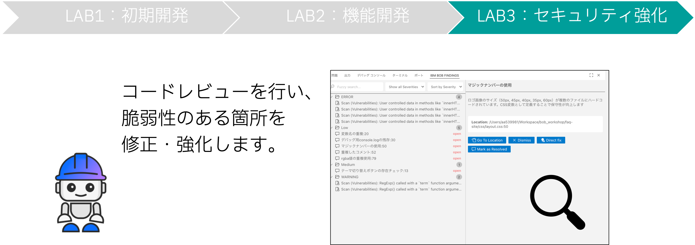
安全なアプリケーション運用のために、生成されたコードにセキュリティ上の問題がないか確認します。Reviewコマンドの実行
1. レビューの実行
チャット画面に「/review」と入力します。
手順:
1. チャット画面に /review と入力
2. 入力途中で候補が出てくるので、候補をクリック
3. 「実行」をクリック
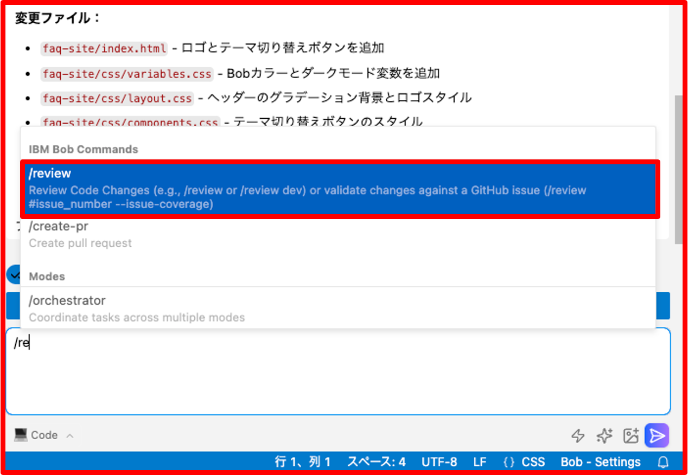
2. モード切り替えの承認
コマンドを送信すると、Bobがモードの切り替えの承認依頼を表示します。
表示された依頼に対して「承認」をクリックしてください。
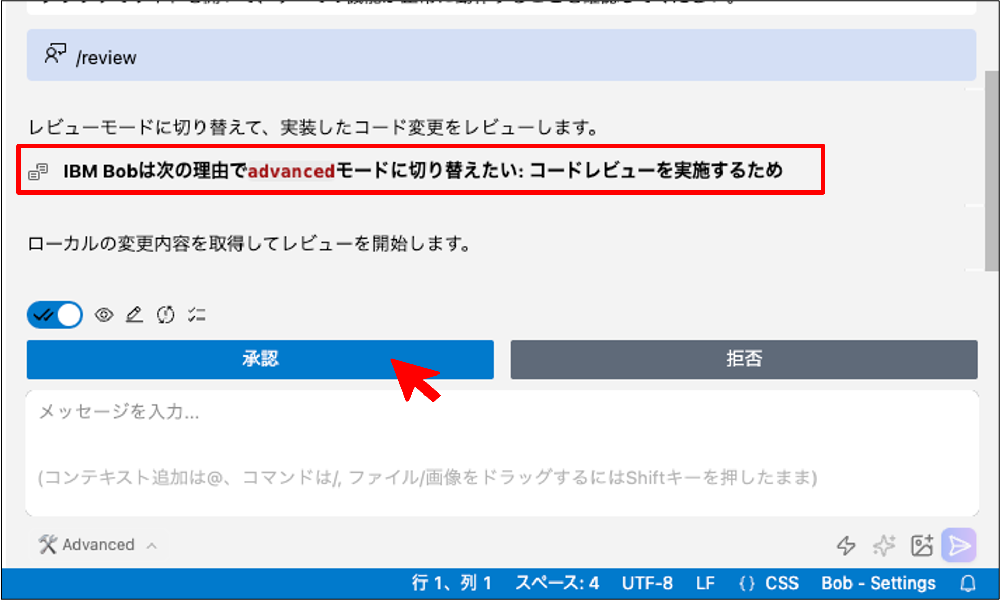
3. レビューの実行
モード切り替え後、Bobによってレビューが実行されます。
下の画像のようにBobがプロジェクトディレクトリの読み取りを行います。
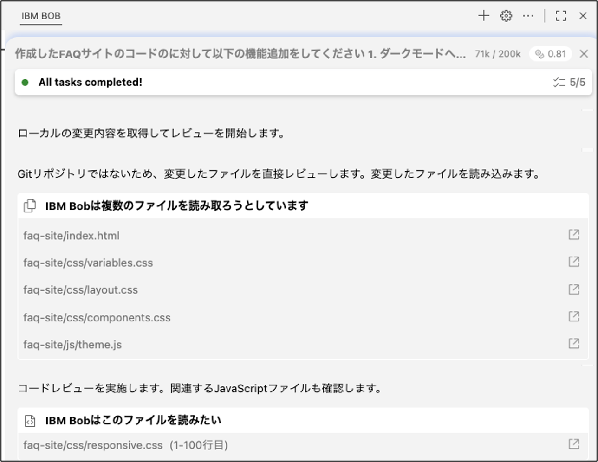
4. レビューの完了
レビューが完了すると、Bobがレビュー結果のサマリーを報告してくれるので、内容を確認します。
サマリーの内容: - 検出された問題の総数 - 優先度別の分類 - 重要な問題のハイライト - 改善すべきポイントを優先度別にレポート
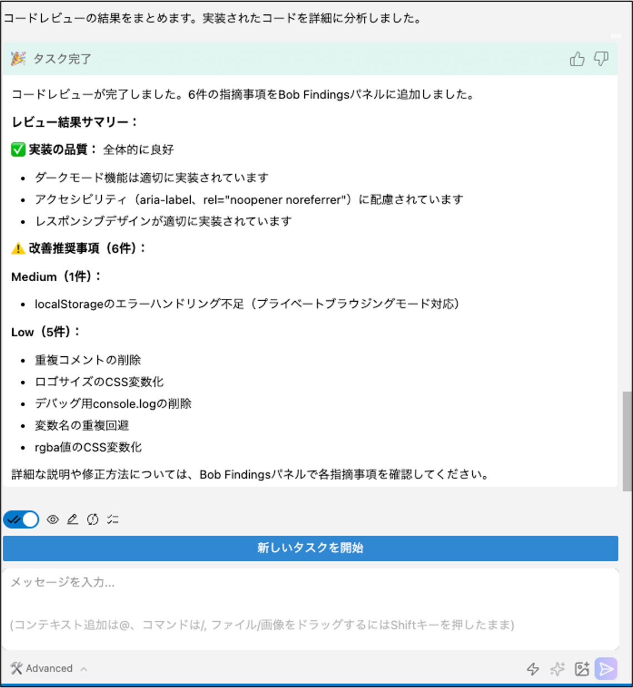
BOB FINDINGSの確認
1. BOB FINDINGSの表示
レビューが完了すると、画面下にBOB FINDINGSが表示されます。
注意: 表示されない場合は、画面下部のボタンをクリックしてください。
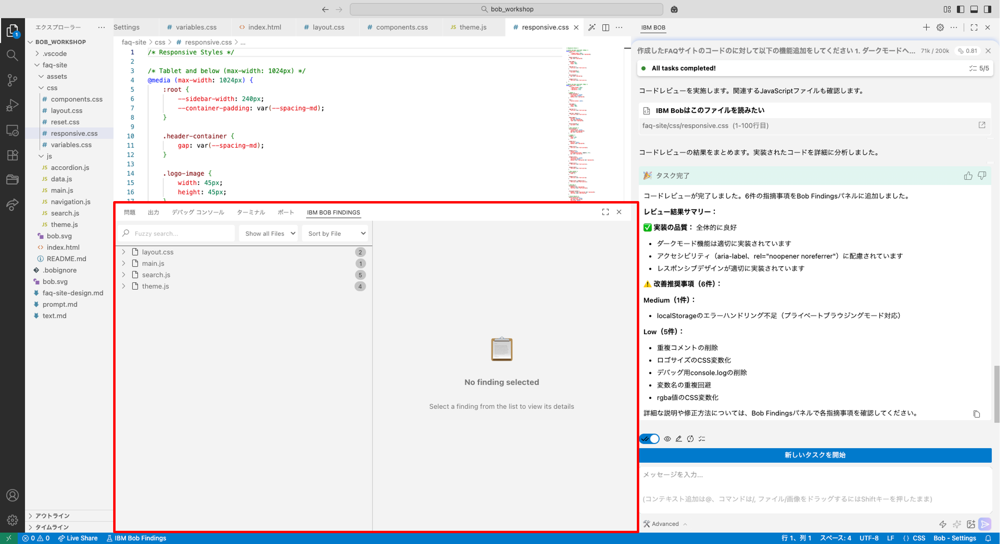
2. BOB FINDINGSの見方
BOB FINDINGSでは、ファイルごとにレビュー項目の数が表示されます。
表示形式:
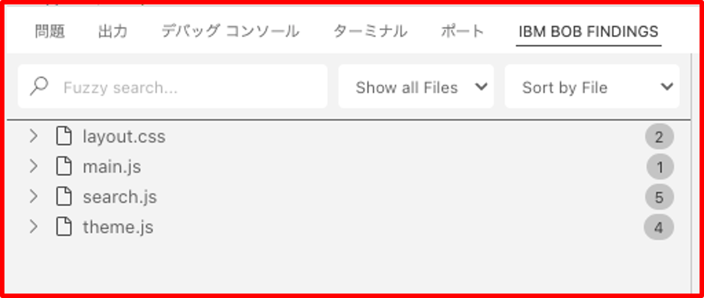
3. レビュー結果の一覧
ファイルを指定して展開すると、レビュー項目の一覧が表示されます。
手順: 1. ファイルを指定 2. レビュー箇所の一覧の確認
表示される情報: - 問題の種類（セキュリティ、パフォーマンス、保守性など） - 重要度（高、中、低） - 該当する行番号 - 問題の説明
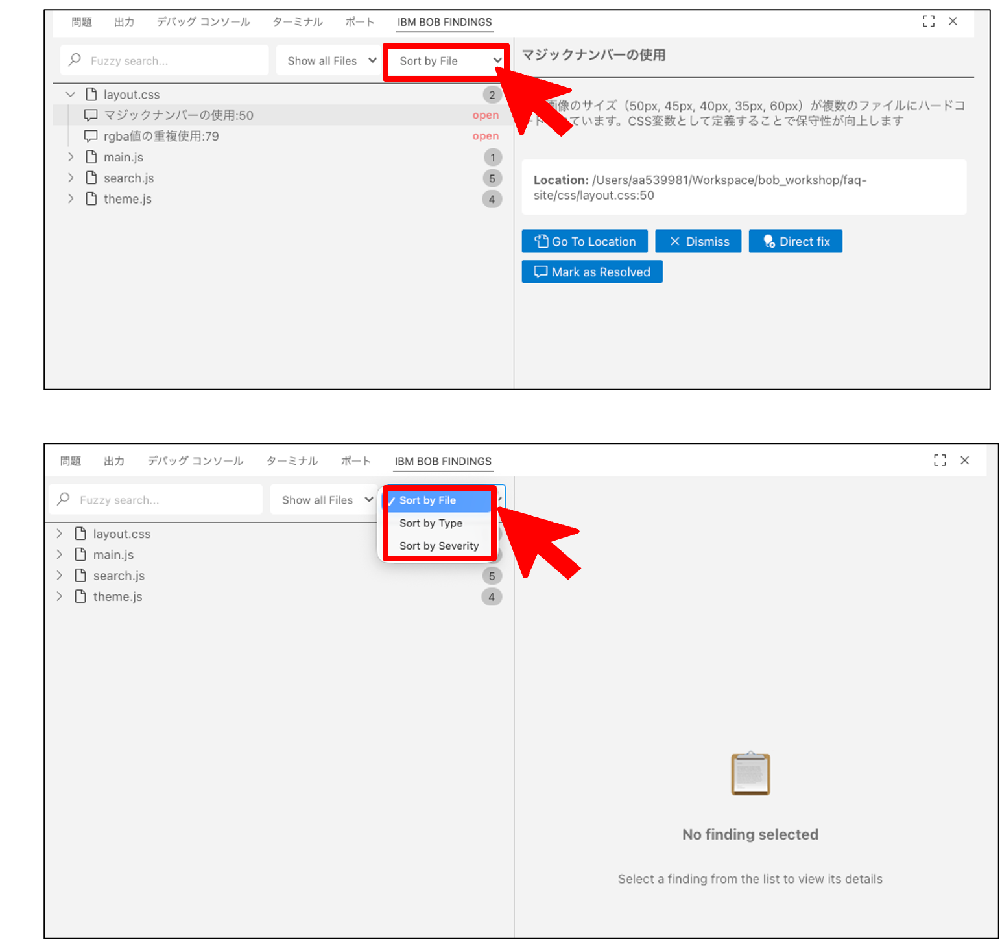
4. レビュー箇所の詳細
レビュー箇所をクリックすると、詳細結果が展開されます。
詳細情報: - 問題の具体的な説明 - なぜ問題なのか - 推奨される修正方法 - コード例
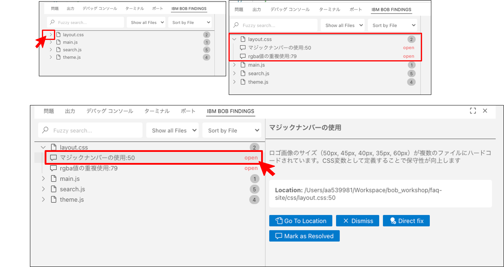
5. 並び替え方法の選択
ファイル別の表示だけでなく、カテゴリーや優先度順に並び替えることも可能です。
並び替えオプション: 1. ファイル別 2. カテゴリー別（セキュリティ、パフォーマンス、保守性） 3. 優先度別（高、中、低）
手順: 1. 並び替えボタンをクリック 2. 並び替え方法の選択 3. 優先度別の並び替え結果を確認
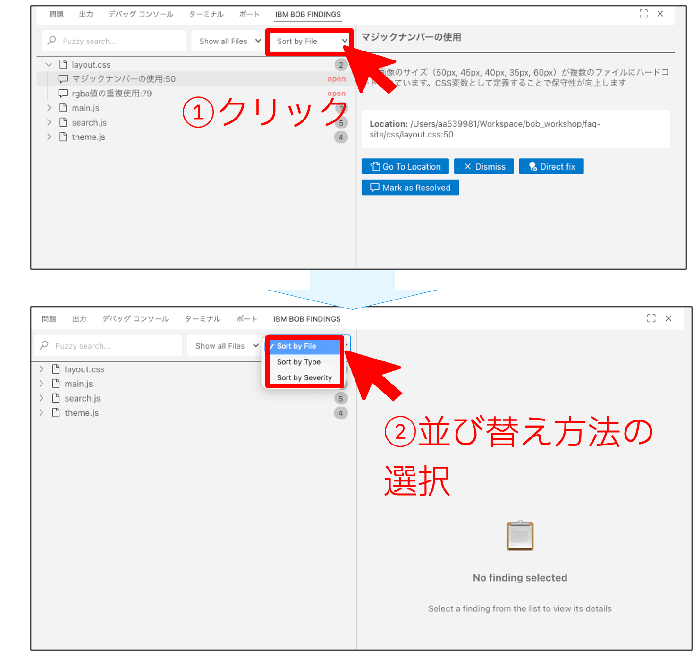
6. レビュー内容の確認
説明欄には、レビュー箇所の概要・推奨修正案が記載されています。
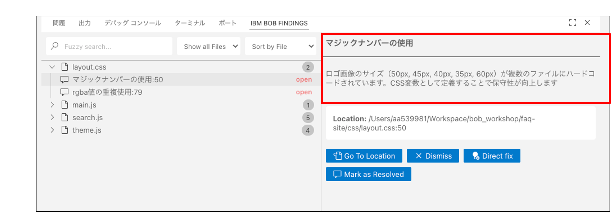
エラー箇所の修正
1. 修正作業の開始
修正したい箇所を一つ選び、その中の「Direct fix」ボタンをクリックして修正を開始します。
ユーザーのアクション:
1. 修正したい項目を選択
2. 「Direct fix」ボタンをクリック

2. 修正内容の連携
修正作業が開始されると、BOB FINDINGS内のレビュー内容がBobに連携され、チャット画面にメッセージが生成されます。
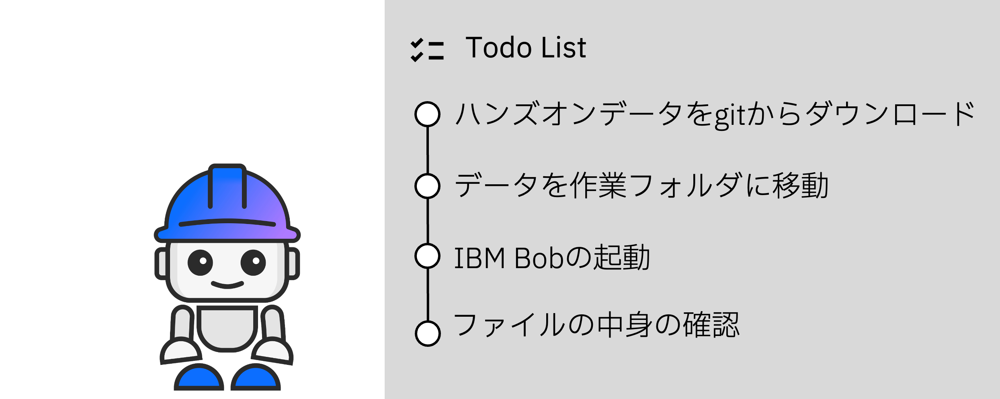
3. レビューサマリーの表示
修正が完了するとサマリーが表示されます。
サマリーの内容:
- 修正された問題
- 変更されたファイル
- 変更内容の概要
- 次のステップの提案

修正後のテスト実行
1. テストの実行
修正完了後にBobはテストの実行を提案してくれるため、「テストの実行」をクリックします。

テストの目的: - 修正が正しく適用されたか確認 - 既存機能が壊れていないか確認 - 新たな問題が発生していないか確認
2. テストの実行プロセス
テストでは、Bobがブラウザ操作を行い、修正したコードが正しく動作しているかをチェックします。

テスト項目: - ページの読み込み - 各機能の動作確認 - エラーの有無 - パフォーマンスの確認
ユーザーのアクション: - テスト結果を確認 - 問題があれば追加の修正を依頼
Lab3完了
LAB3の完了
ToDoリストがすべて完了してサマリーが出力されたら、LAB3は完了です！
完了条件:
- [ ] /review コマンドでコードレビューを実行
- [ ] BOB FINDINGSを確認
- [ ] 1つ以上の問題を修正
- [ ] テストを実行
お疲れ様でした！
前へ: LAB2 - 機能開発 | 次へ: まとめ